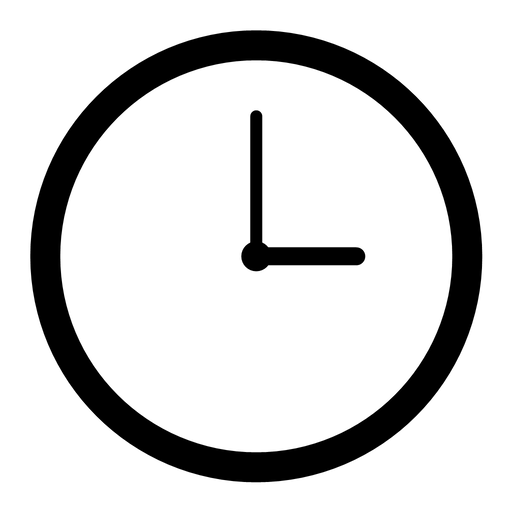
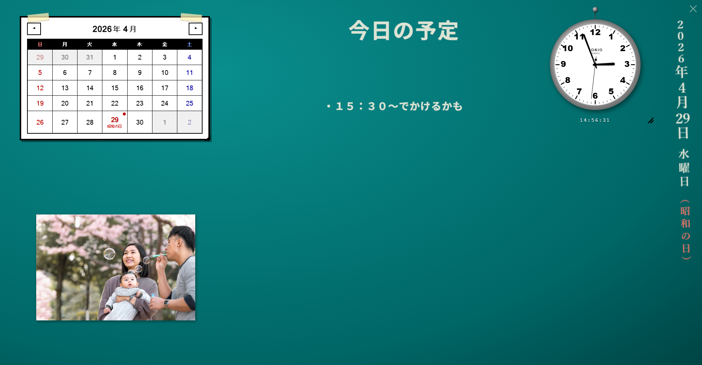

昭和の小学校の教室の、あの黒板を覚えていますか。
ティールグリーンの板に、白いチョークで日付と時間。赤チョークで日曜と祝日。マスキングテープで貼られた紙のカレンダー。掲示板の隅っこには遠足の写真。
Old Clock Calendar は、その風景をそのままデスクトップに再現する、Windows向けの常駐ウィジェットです。
使うたびに、ちょっとだけ昭和の教室に戻れます。

作品紹介 / 個人開発Old Clock Calendar
教室の片隅にあった、あの時計とカレンダー。

昭和の小学校の教室の、あの黒板を覚えていますか。
ティールグリーンの板に、白いチョークで日付と時間。赤チョークで日曜と祝日。マスキングテープで貼られた紙のカレンダー。掲示板の隅っこには遠足の写真。
Old Clock Calendar は、その風景をそのままデスクトップに再現する、Windows向けの常駐ウィジェットです。
使うたびに、ちょっとだけ昭和の教室に戻れます。
TOKIO QUARTZ 風の壁掛け時計。秒針までしっかり動きます。
マスキングテープで貼った風の紙カレンダー。日本の祝日を赤で自動表示。
朝の会の黒板のように、その日の予定を箇条書きでメモ。
家族の写真や思い出のスナップを、黒板にドラッグ＆ドロップで貼り付け。
「2026年4月29日 水曜日（昭和の日）」を縦書きで一気に表示。
Tauri 2製でメモリ使用量わずか。起動時自動実行にも対応。
Windows のデスクトップガジェットは 2012 年に廃止されて以来、OS 標準にはありません。Rainmeter はあるけど、設定して、スキン探して、…とちょっと敷居が高い。
「インストールしたら即、あの懐かしい雰囲気」を味わえるものを作りたかった。
派手な機能はないけれど、デスクトップの片隅にいるだけで、ちょっと部屋の温度が変わる。そんな道具を目指しました。
Electron ではなく Tauri を選んだのは、メモリ消費を抑えて「一日中つけっぱなしにできる」ことを優先したかったから。常駐ツールとしての軽さは譲れないポイントでした。
あの教室の風景を、もう一度。